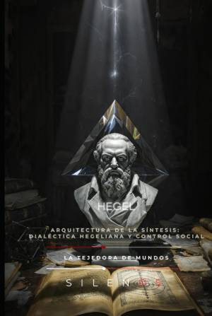

Illuminati
HEGEL Arquitectura de la Síntesis: Dialéctica Hegeliana y Control Social
Sinopsis
Descubra una exploración profunda y contemporánea sobre uno de los pensadores más influyentes de la historia. Hegel: Arquitectura de la Síntesis no es solo una biografía intelectual; es un análisis exhaustivo sobre cómo la dialéctica hegeliana prefiguró las estructuras de poder, la técnica y el control social en el mundo moderno. ¿Qué encontrará en este libro? La Forja del Pensamiento: Un recorrido por sus orígenes en Stuttgart, su paso por el Seminario de Tubinga junto a figuras como Schelling y Hölderlin, y la influencia mística y racionalista que moldeó su visión del mundo. La Dialéctica y el Absoluto: Un análisis detallado de la Fenomenología del Espíritu, explorando conceptos fundamentales como la dialéctica del amo y el esclavo, la conciencia infeliz y el encuentro con la historia encarnado en la figura de Napoleón. Arquitectura del Control Social: Una mirada crítica hacia la aplicación de la lógica hegeliana en la organización del Estado, la ética y la política, cuestionando si sus ideas son herramientas de emancipación o instrumentos de dominio. Un puente entre la filosofía clásica y el futuro A través de sus páginas, los autores Cristina Lobo y Manuel Rodsua conectan los pilares del idealismo alemán con las preocupaciones del siglo XXI: la transparencia, la tecnología, la educación y la participación ciudadana. El libro disecciona cómo el "Espíritu" se despliega en la historia y cómo esa síntesis define nuestra vida común hoy en día. ¿Por qué leer esta obra? Si busca comprender las raíces del pensamiento sistémico moderno, la evolución de la conciencia colectiva y los mecanismos que sostienen el orden social, esta obra le ofrece la claridad necesaria. Es una invitación a la reflexión crítica sobre si seremos agentes de nuestra propia libertad o simples piezas en una maquinaria de control. Ideal para estudiantes de filosofía, sociología, ciencias políticas y cualquier lector interesado en la evolución de las ideas que mueven el mundo.